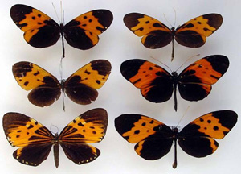

Biogeography
and speciation
in Amazonian Peru
Amazonian rainforest is famously the most diverse terrestrial biome on
the planet. Why?
Relatively benign climates resulted
in rather more modest climatic fluctuations in this moist tropical region than
in more species-poor temperate zones. Perhaps local ecological
factors and natural selection drove speciation, rather than major
geological and climatic change? Alternatively, some have suggested that
climatic fluctuations led to geographic isolation of rainforest pockets
-- the "Pleistocene refugium" model of diversification.
The
answers to the question of how speciation occurred has important
implications for understanding and conserving rainforest biotas.
This PhD project will explore of some of the factors that may drive
speciation, and will allow comparative tests among a large community of
closely related species. Our group has been investigating mimetic
tropical butterflies in the Heliconiinae
and Ithomiinae.
These insects have recently radiated to adopt different mimicry patterns
and host plant ecology. Both mimicry and host-plant relations are
ecological adaptations that may have triggered speciation and
subsequent diversification. Butterflies are easier to analyse
genetically than vertebrates such as birds, yet still have highly
visible behaviour and ecology that can be studied with a high degree of
replication.
An important component of this work could involve studies of DNA
sequences within and between species to estimate how long ago
divergence occurred, and to investigate hybridization and gene flow.
The
ithomiines of the Tarapoto area of Peru are described by Mathieu
Joron on his website. A NERC grant has
just been awarded to Jim Mallet. The proposal
gives a detailed (maybe too detailed) description of a molecular evolutionary project that
will run simultaneously with the student's own project. It is
anticipated
that the student would collaborate closely on the NERC project and
benefit by
support from the grant.
|
|

The successful student will carry out one of a number of possible
projects, depending on whether his or her interests are more in
fieldwork, ecology or behavioural studies or molecular evolution and
genetics. I am particularly interested in students who might
bring new insights and ideas to the overall project, and who might want
to use a combination of techniques. Possible projects, in no particular order, are:
1) Ecological/field studies of factors important in diversification
2) Investigations of closely related species by means of crosses in
insectaries.
3) Molecular evolutionary genetic
studies of gene genealogies and inferences about time since speciation.
For further information about our research and contact
details for this project see Jim Mallet's Home Page.
You should apply as soon as possible, but anyway by 28 Feb 2004 (or
until the position is filled). Send to Jim Mallet, via email or
snail mail:
- Your CV
- Names addresses, emails, phone nos. etc. of two referees
- A cover letter, explaining your
interests in detail, how you feel you might fit into a group like ours,
and your choice of type of project within our area.
|